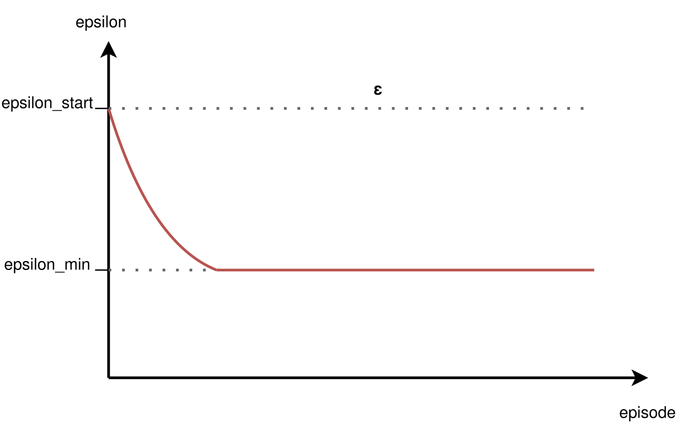
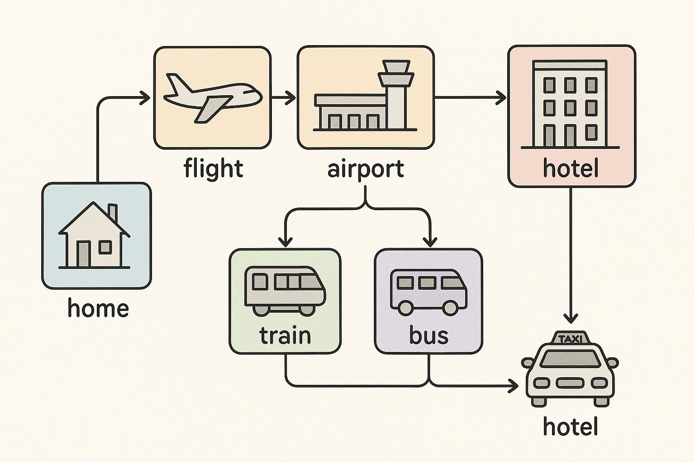
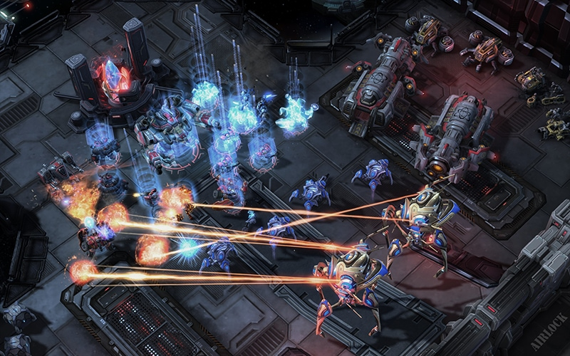
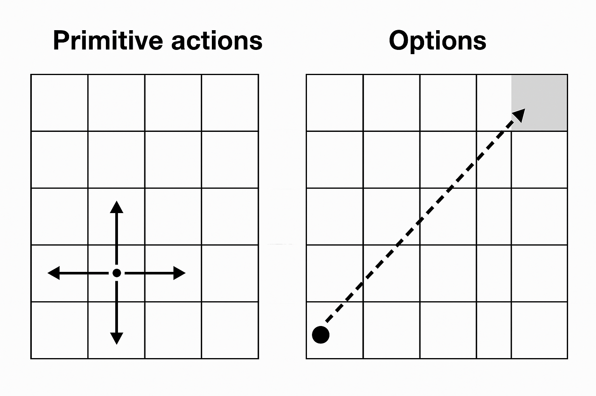

CSC 53439 EP
Lecture 2
Exploration and Distributional Methods in RL
October 3, 2026
Outline
Part 1
Exploration and Uncertainty
Exploration-Exploitation Dilemma

(Image source: UC Berkeley AI course slide, lecture 11.)
- Agent must explore to discover rewarding actions and states.
- Agent must exploit known information to maximize reward.
- Balancing exploration and exploitation is critical for efficient learning.
- Too much exploration: slow progress; too much exploitation: suboptimal policies.
Unstructured Exploration
$\varepsilon$-greedy
$\quad$ $\mathbf{s} \leftarrow \text{env.reset}()$
$\quad$ DO
$\quad\quad$ $\mathbf{a} \leftarrow \color{red}{\epsilon\text{-greedy}(\mathbf{s}, \hat{Q}_{\mathbf{\omega_1}})}$
$\quad\quad$ $r, \mathbf{s'} \leftarrow \text{env.step}(\mathbf{a})$
$\quad\quad$ Store transition $(\mathbf{s}, \mathbf{a}, r, \mathbf{s'})$ in $\mathcal{D}$
$\quad\quad$ If $\mathcal{D}$ contains "enough" transitions
$\quad\quad\quad$ Sample random batch of transitions $(\mathbf{s}_j, \mathbf{a}_j, r_j, \mathbf{s'}_j)$ from $\mathcal{D}$ with $j=1$ to $m$
$\quad\quad\quad$ For each $j$, set $y_j = \begin{cases} r_j & \text{for terminal } \mathbf{s'}_j\\ r_j + \gamma \max_{\mathbf{a}^\star} \hat{Q}_{\mathbf{\omega_{2}}} (\mathbf{s'}_j)_{\mathbf{a}^\star} & \text{for non-terminal } \mathbf{s'}_j \end{cases}$
$\quad\quad\quad$ Perform a gradient descent step on $\left( y_j - \hat{Q}_{\mathbf{\omega_1}}(\mathbf{s}_j)_{\mathbf{a}_j} \right)^2$ with respect to the weights $\mathbf{\omega_1}$
$\quad\quad\quad$ Every $\tau$ steps reset $\hat{Q}_{\mathbf{\omega_2}}$ to $\hat{Q}_{\mathbf{\omega_1}}$, i.e., set $\mathbf{\omega_2} \leftarrow \mathbf{\omega_1}$
$\quad\quad$ $\mathbf{s} \leftarrow \mathbf{s'}$
$\quad$ UNTIL $\mathbf{s}$ is final
RETURN $\mathbf{\omega_1}$

At each step,:
- with probability ε, select a random action;
- with probability 1-ε, select the action with the highest estimated value.
👉 Simple to implement, widely used in discrete action spaces.
Typically, ε is annealed (decreased) over time to shift from exploration to exploitation.
The decay schedule is a hyperparameter and often determined empirically.
Unstructured Exploration
Gaussian Noise
- Add zero-mean Gaussian noise to the action output by the policy.
- Common in algorithms for continuous control (e.g., DDPG, TD3).
- Noise variance can be annealed to reduce exploration over time.
- Encourages smooth, local exploration around the current policy.
$$\mu'(s_t) = \mu(s_t | \theta^{\mu}_t) + \mathcal{N}$$
where $\mu(s_t | \theta^{\mu}_t)$ is the actor network with weights $\theta^{\mu}_t$
and $\mathcal{N}$ is a noise process (e.g. Gaussian or Ornstein-Uhlenbeck).
Limits of Unstructured Exploration
Case Study: Montezuma's Revenge (Atari)
Unstructured methods (ε-greedy, Gaussian noise) struggle in environments with sparse rewards and complex exploration requirements.
Montezuma's Revenge (Atari): classic benchmark for hard exploration.
- Random actions rarely reach rewarding states; agent fails to learn meaningful behavior.
- Motivates the need for intrinsic motivation and structured exploration techniques.
Maximum Entropy RL
Exploration and Robustness via Entropy
Augments the reward with an entropy term to encourage diverse actions: $$ J(\pi) = \mathbb{E}_{\pi} \left[ \sum_t r_t + \alpha \mathcal{H}(\pi(\cdot|s_t)) \right] $$ where $\mathcal{H}$ is the entropy and $\alpha$ controls the exploration-exploitation tradeoff.
- Promotes stochastic policies, improving robustness and exploration.
- Widely used in robotics and continuous action domains.
Maximum Entropy RL
Exploration and Robustness via Entropy
Key algorithms:
-
Soft Q-Learning (SQL): incorporates entropy into Q-learning updates.
Equivalence Between Policy Gradients and Soft Q-Learning, Schulman et al., 2017. -
Soft Actor-Critic (SAC): off-policy actor-critic with entropy maximization,
state-of-the-art for continuous control.
Soft Actor-Critic: Off-Policy Maximum Entropy Deep Reinforcement Learning with a Stochastic Actor, Haarnoja et al., 2018.
Parameter Noise-based Exploration
Noisy Nets, Parameter Space Noise
Intrinsic Reward-based Exploration
Augment environment reward $r_t$ with an intrinsic reward $r^i_t$: $$r_t \leftarrow r_t + \beta \cdot r^i_t$$ where $\beta$ balances exploitation vs exploration.
👉 Encourages agent to explore novel or uncertain states.
Two main approaches:
- Count-based exploration: bonus for visiting rarely seen states.
- Prediction-based exploration: bonus for high prediction error (surprise).
Intrinsic Reward-based Exploration
Count-based Exploration
Assigns exploration bonus inversely proportional to state visit count: $$r^i_t = \frac{1}{\sqrt{N(s_t)}}$$
Advantage: Effective in small, discrete state spaces.
Limitation: Infeasible in high-dimensional or continuous spaces
(counts become sparse or meaningless).
Alternatives: Density models approximate state visitation counts:
- Bellemare et al., 2016 – CTS-based pseudocounts
- Ostrovski et al., 2017 – PixelCNN-based pseudocounts
- Tang et al., 2017 – Hash-based counts
Intrinsic Reward-based Exploration
Prediction-based Exploration
Uses prediction error as intrinsic reward: $$r^i_t = \| f(s_t, a_t) - s_{t+1} \|$$ where $f$ is a learned forward dynamics model.
Properties:
- Agent is rewarded for visiting states where its model is uncertain or inaccurate (novelty/surprise).
- Common in high-dimensional or continuous environments.
Alternatives: Density models approximate state visitation counts
- Model can be "fooled" by stochasticity or noise.
- May focus on unpredictable but irrelevant states.
- Motivates use of random networks (e.g., RND) for more robust novelty estimation.
Intrinsic Reward-based Exploration
Limits of Prediction-based Intrinsic Motivation
- In stochastic environments, dynamics are unpredictable (e.g., random noise, moving objects).
- Prediction error remains high even for familiar states.
- Agent is attracted to noisy or unpredictable regions, leading to biased and inefficient exploration.
Intrinsic Reward-based Exploration
Motivation for RND
A measure of novelty that is more stable and less sensitive to randomness.
-
Target network = a fixed random function \( f_{\text{target}}(s) \).
- Since it is frozen, it defines a stable representation of states.
- Each state has a unique but time-invariant signature.
-
Predictor network = a network trained to approximate \( f_{\text{target}}(s) \).
- The prediction error is high at first for all states.
- As some states are revisited, the predictor learns to approximate them → error decreases.
- Truly novel states remain hard → high error → strong intrinsic reward.
👉 Unlike dynamics prediction, this error does not depend on the environment’s stochasticity, but only on whether the state has already been “learned” by the predictor.
Intrinsic Reward-based Exploration
Focus on RND
- RND uses two neural networks:
- Target network: randomly initialized, fixed parameters.
- Predictor network: trained to predict the target network's output for each state.
- Intrinsic reward: prediction error (difference between predictor and target outputs).
- States that are novel (rarely visited) yield high prediction error and thus high intrinsic reward.
- As the agent visits a state more often, the predictor learns to match the target, reducing the intrinsic reward.
- Encourages exploration of unfamiliar states.
Burda et al. (2018). Exploration by random network distillation.
Intrinsic Reward-based Exploration
Others Key Publications
| Algorithm | Reference |
|---|---|
| VIME | Houthooft et al., 2016. Variational Information Maximizing Exploration. |
| CTS-based Pseudocounts | Bellemare et al., 2016. Unifying Count-Based Exploration and Intrinsic Motivation. |
| PixelCNN-based Pseudocounts | Ostrovski et al., 2017. Count-Based Exploration with Neural Density Models. |
| Hash-based Counts | Tang et al., 2016. #Exploration: A Study of Count-Based Exploration for Deep Reinforcement Learning. |
| EX2 | Fu et al., 2017. EX2: Exploration with Exemplar Models for Deep Reinforcement Learning. |
| Intrinsic Curiosity Module (ICM) | Pathak et al., 2017. Curiosity-driven Exploration by Self-supervised Prediction. |
| Curiosity-driven Learning (systematic analysis) | Burda et al., 2018. Large-Scale Study of Curiosity-Driven Learning. |
| RND | Burda et al., 2018. Exploration by Random Network Distillation. |
Further Reading
Exploration Strategies in Deep Reinforcement Learning , Lilian Weng, 2020.
👉 A comprehensive blog post covering a wide range of exploration techniques, theoretical motivations, and practical considerations in deep RL.
Limits of Intrinsic Reward
Motivation for Memory-based Exploration
- Intrinsic reward methods (e.g., novelty, prediction error) encourage exploration by rewarding new or surprising states.
- Key limitations:
- Slow function approximation: Neural networks may lag in updating, so states can appear "novel" longer than they are.
- Non-stationary bonus: What is surprising changes as the agent learns, making the intrinsic reward unstable.
- Knowledge fading: Once a state is no longer novel, the agent may forget its importance, even if it is crucial for solving the task.
- Alternative: Memory-based exploration augments the agent with an explicit memory module to track visited states and contexts.
- This enables more reliable novelty detection, stabilizes exploration signals, and helps retain knowledge of key states.
- Example: Never Give Up (NGU) combines short-term episodic memory with long-term novelty signals (e.g., RND) to avoid forgetting useful states.
Memory-based Exploration
Archive-based / Return-based Exploration
- Go-Explore (Ecoffet et al., 2019): systematic exploration by explicitly archiving and revisiting states. [arXiv] | [Uber AI blog]
- Two phases:
- Exploration: Build an archive of visited states ("cells"), return to promising states, and explore from there.
- Robustification: Learn robust policies to reliably reach and exploit discovered trajectories.
- Highly effective in environments with sparse rewards (e.g., Montezuma's Revenge).
- Distinct from intrinsic reward or parameter noise approaches: relies on explicit state memory and systematic return.
Video
Part 2
Distributional RL
Categorical DQN (C51)
Introduction & Motivation
Classic DQN:
- Learns only the expectation $Q(s,a)=\mathbb{E}[R \mid s,a]$
- Bellman: \(Q(s,a) = R(s,a) + \gamma Q(s', a')\).
- Lost information: variance, skewness, tail (risk) structure.
Distributional RL:
- Model full return random variable \(Z(s,a)\) (not just its mean).
- Distributional Bellman: \(\mathcal{T} Z(s,a) \stackrel{D}{=} R(s,a) + \gamma Z(s', a')\).
- Benefits: richer training signal, more stable gradients, enables risk-sensitive objectives.
Key idea: preserve probabilistic structure throughout the backup,
then take \(\mathbb{E}[Z]\)
only for action selection.
DQN Recap

- Goal: approximate \( Q(s,a) = \mathbb{E}\left[\sum_{t} \gamma^t r_t \mid s,a\right] \)
- Network: input is state, output is vector \( Q(s,a) \) for all actions
- Bellman backup (target): \( y = r + \gamma \max_{a'} Q(s',a') \)
- Loss: mean squared error \( (y - Q(s,a))^2 \)
- Limitation: collapses all uncertainty into a single scalar value
Distributional RL

- Random return: \( Z(s,a) \) is a random variable over \( \mathbb{R} \)
- Distributional Bellman: \( \mathcal{T} Z(s,a) \stackrel{D}{=} r + \gamma Z(S', A') \), i.e., the law is transformed
- Goal: approximate the law of \( Z(s,a) \) (not just \( \mathbb{E}[Z] \))
- Expectation recoverable: \( Q(s,a) = \mathbb{E}[Z(s,a)] \)
- C51: A Distributional Perspective on Reinforcement Learning, Bellemare et al., 2017.
Categorical Approximation (C51)

- Fixed discrete support: \( \{z_i\}_{i=0}^{N-1} \), with \( N = 51 \)
- Bounded interval: \( [V_{\min}, V_{\max}] \)
- \( \Delta z = \frac{V_{\max} - V_{\min}}{N-1} \)
- Network predicts logits \( \to \) softmax \( \to \) \( p_i(s,a) \)
- Approximate distribution: \( \mathbb{P}(Z(s,a) = z_i) = p_i \)
Distributional RL
Example of learned distribution

Distributional RL
Example of learned distribution
Distributional RL
Example of learned distribution
C51 Architecture


- Backbone identical to DQN: convolutional layers followed by fully connected layers.
- Output: $(\#\text{actions} \times N)$ logits, reshaped to $(\#\text{actions}, N)$.
- Softmax over atoms for each action: $p_i(s,a)$.
- Action selection: $a^* = \arg\max_a \sum_i p_i(s,a) z_i$.
- Target: uses frozen (target) network and projection onto fixed support.
But wait...
Why model the full value distribution if action selection is based only on the expected value?
DQN Algorithm
$\quad\quad$ none
Algorithm parameter:
$\quad\quad$ discount factor $\gamma$
$\quad\quad$ step size $\alpha \in (0,1]$
$\quad\quad$ small $\epsilon > 0$
$\quad\quad$ capacity of the experience replay memory $M$
$\quad\quad$ batch size $m$
$\quad\quad$ target network update frequency $\tau$
Initialize replay memory $\mathcal{D}$ to capacity $M$
Initialize action-value function $\hat{Q}_{\mathbf{\omega_1}}$ with random weights $\mathbf{\omega_1}$
Initialize target action-value function $\hat{Q}_{\mathbf{\omega_2}}$ with weights $\mathbf{\omega_2} = \mathbf{\omega_1}$
FOR EACH episode
$\quad$ $\mathbf{s} \leftarrow \text{env.reset}()$
$\quad$ DO
$\quad\quad$ $\mathbf{a} \leftarrow $$\epsilon\text{-greedy}(\mathbf{s}, \hat{Q}_{\mathbf{\omega_1}})$
$\quad\quad$ $r, \mathbf{s'} \leftarrow \text{env.step}(\mathbf{a})$
$\quad\quad$ Store transition $(\mathbf{s}, \mathbf{a}, r, \mathbf{s'})$ in $\mathcal{D}$
$\quad\quad$ If $\mathcal{D}$ contains "enough" transitions
$\quad\quad\quad$ Sample random batch of transitions $(\mathbf{s}_j, \mathbf{a}_j, r_j, \mathbf{s'}_j)$ from $\mathcal{D}$ with $j=1$ to $m$
$\quad\quad\quad$ For each $j$, set $y_j = \begin{cases} r_j & \text{for terminal } \mathbf{s'}_j\\ r_j + \gamma \max_{\mathbf{a}^\star} \hat{Q}_{\mathbf{\omega_{2}}} (\mathbf{s'}_j)_{\mathbf{a}^\star} & \text{for non-terminal } \mathbf{s'}_j \end{cases}$
$\quad\quad\quad$ Perform a gradient descent step on $\left( y_j - \hat{Q}_{\mathbf{\omega_1}}(\mathbf{s}_j)_{\mathbf{a}_j} \right)^2$ with respect to the weights $\mathbf{\omega_1}$
$\quad\quad\quad$ Every $\tau$ steps reset $\hat{Q}_{\mathbf{\omega_2}}$ to $\hat{Q}_{\mathbf{\omega_1}}$, i.e., set $\mathbf{\omega_2} \leftarrow \mathbf{\omega_1}$
$\quad\quad$ $\mathbf{s} \leftarrow \mathbf{s'}$
$\quad$ UNTIL $\mathbf{s}$ is final
RETURN $\mathbf{\omega_1}$
C51 Algorithm
$\quad$ $\mathbf{s} \leftarrow \text{env.reset}()$
$\quad$ DO
$\quad\quad$ $\mathbf{a} \leftarrow $$\epsilon\text{-greedy}(\mathbf{s}, \hat{Z}_{\mathbf{\omega_1}})$
$\quad\quad$ $r, \mathbf{s'} \leftarrow \text{env.step}(\mathbf{a})$
$\quad\quad$ Store transition $(\mathbf{s}, \mathbf{a}, r, \mathbf{s'})$ in $\mathcal{D}$
$\quad\quad$ IF $\mathcal{D}$ contains "enough" transitions
$\quad\quad\quad$ Sample random batch of transitions $(\mathbf{s}_j, \mathbf{a}_j, r_j, \mathbf{s'}_j)$ from $\mathcal{D}$ with $j=1$ to $m$
$\quad\quad\quad$ FOR EACH transitions $(\mathbf{s}, \mathbf{a}, r, \mathbf{s'})$ of this batch
$\quad\quad\quad\quad$ Apply the Bellman operator
$\quad\quad\quad\quad$ Compute the projection $\Phi$ of $\mathcal{T}^{\pi}Z$ onto the support $\{z_i\}$
$\quad\quad\quad\quad$ Perform a gradient descent step to minimize the cross-entropy
$\quad\quad\quad$ Every $\tau$ steps reset $\hat{Z}_{\mathbf{\omega_2}}$ to $\hat{Z}_{\mathbf{\omega_1}}$, i.e., set $\mathbf{\omega_2} \leftarrow \mathbf{\omega_1}$
$\quad\quad$ $\mathbf{s} \leftarrow \mathbf{s'}$
$\quad$ UNTIL $\mathbf{s}$ is final
RETURN $\mathbf{\omega_1}$
$$Q(s,a) = \mathbb{E}[Z(s,a)] = \sum_i z_i , p_\omega(z_i \mid s,a).$$ The value $Q$ can be obtained as the expectation of $Z$.
Behavior policy: with probability $1-\epsilon$, take the action that maximizes the expected value
according to the current distributional estimate.

Since the support of the target distribution does not necessarily fall exactly on the fixed support of the predicted distribution,
we project it using the operator $(\Phi)$.

Perform a gradient descent step to minimize the cross-entropy between
the predicted distribution and the target distribution.
$$L(\omega) = - \sum_i p_i^{\text{target}} \log p_i^{\text{pred}}$$
C51
Atari Results (Summary)

Source: A Distributional Perspective on Reinforcement Learning, Bellemare et al., 2017.
- Improved median score compared to vanilla DQN
- Faster convergence in the first millions of frames
- Reduced training variance
- Foundation for Rainbow (integration of further improvements)
C51
Atari Results (varying number of atoms)

Source: A Distributional Perspective on Reinforcement Learning, Bellemare et al., 2017.
C51
Limitations & Extensions
- Fixed support: risk of saturation if returns fall outside $[V_{\min}, V_{\max}]$
- Uniform resolution: inefficient for modeling sharp tails or skewed distributions
- Extensions:
- QR-DQN: learns quantiles, reducing projection bias
- IQN: continuous implicit quantile function for flexible modeling
- Paradigm: working with distributions enables risk-sensitive and utility-based RL
C51
Conclusion & Discussion
- Moving from expectation to distribution provides a richer learning signal.
- C51 is simple, effective, and forms the basis for many improvements.
- Actions are selected via the expectation: the full distribution is valuable for training and for future risk-sensitive objectives.
- Enables risk-sensitive RL, robustness, and informed exploration.
- Open questions: how to choose the support? How to combine with epistemic uncertainty?
Quantile Regression Deep Q-Network

- Represents the value distribution by estimating a fixed set of quantiles.
- Uses quantile regression loss to train the network.
- Improves stability and expressiveness over categorical methods.
Distributional Reinforcement Learning with Quantile Regression, Dabney et al., 2017.
Extensions
QR with Utility / Risk-sensitive RL
- Integrate utility functions into quantile-based RL
for risk-sensitive objectives. - Customize agent behavior: risk-averse, risk-seeking,
or robust policies. - Applications in finance, robotics, and safety-critical domains.
Further Reading
Bellemare, M. G., Dabney, W., & Rowland, M. (2023). Distributional Reinforcement
Learning. MIT Press.
Freely available as an open-access PDF from MIT Press.

Part 4
Distributed RL / Scaling RL
A3C
Asynchronous Advantage Actor-Critic
- Multiple agents run in parallel, each with its own environment copy.
- Asynchronous updates to shared parameters.
- Improves exploration and training speed.
Ape-X
Distributed Prioritized Experience Replay
- Many actors generate experience in parallel.
- Centralized learner updates the policy using prioritized replay.
- Scalable to large clusters, efficient data collection.
IMPALA
Importance Weighted Actor-Learner Architecture
- Many actors send trajectories to a central learner.
- Uses V-trace for off-policy correction.
- Highly scalable, supports thousands of actors.
R2D2
Recurrent Experience Replay in Distributed RL
- Distributed experience replay with recurrent networks (LSTM).
- Handles partial observability and long-term dependencies.
- Combines scalability with memory-based policies.
Distributed RL
Key Publications
-
Accelerated Methods for Deep Reinforcement Learning, Stooke and Abbeel, 2018.
Contribution: Systematic analysis of parallelization in deep RL across algorithms. -
IMPALA: Scalable Distributed Deep-RL with Importance Weighted Actor-Learner Architectures, Espeholt et al., 2018.
Algorithm: IMPALA -
Distributed Prioritized Experience Replay, Horgan et al., 2018.
Algorithm: Ape-X -
Recurrent Experience Replay in Distributed Reinforcement Learning, Anonymous, 2018.
Algorithm: R2D2 -
RLlib: Abstractions for Distributed Reinforcement Learning, Liang et al., 2017.
Contribution: A scalable library of RL algorithm implementations. Documentation link
Part 5
Hierarchical Reinforcement Learning
Hierarchical RL
Introduction
Human analogy: planning a trip vs. walking to the station

Hierarchical RL
Introduction

Hierarchical RL
What and Why?
- Decompose complex tasks into simpler subtasks
- Learn policies at multiple levels of abstraction
- Motivation: scalability, efficiency, transferability
Hierarchical RL
Applications
Some problems have natural hierarchical structure
- Navigation tasks: route planning + motor control
- Multi-agent systems: hierarchical team organization
- Robotics: task planning + low-level control
- Game playing: strategy + tactical execution
Hierarchical RL
Advantages
- Improved sample efficiency
- Better exploration
- Transfer and reuse of subpolicies
- Scalability to complex tasks

Hierarchical RL
Challenges
- Find subgoals
- Find a meta-policy over these subgoals
- Find subpolicies for these subgoals
The options framework
Sutton, R. S., Precup, D., & Singh, S. (1999). Between MDPs and semi-MDPs: A framework for temporal abstraction in reinforcement learning. Artificial Intelligence, 112(1-2), 181-211.
The options framework
Motivation: Temporal Abstraction in RL
- Standard MDPs only support primitive actions at each timestep.
- Need: a way to represent and learn temporally extended behaviors.
- Goal: extend RL framework minimally to include such temporal abstractions.
👉 Solution: Extend standard MDPs to support temporally extended actions called options
The options framework
What is an Option?
- Some states are designated as subgoals
- At a subgoal, the agent can choose an option (macro-action) instead of a primitive action
- Options are sequences of primitive actions grouped together
- Executing an option means executing this sequence of actions

The options framework
What is an Option?
An option $\omega$ is defined by a triple: $$\omega = \langle I, \pi, \beta \rangle$$
| $I_{\omega}$ | The initiation set $I \subseteq \mathcal{S}$ states where the option can be chosen. |
| $\pi_{\omega}(a|s)$ | The subpolicy $\pi : \mathcal{S} \times \mathcal{A} \rightarrow [0, 1]$ controls which primitive actions are taken while the option runs (here a stochastic policy). |
| $\beta_{\omega}(s)$ | The termination condition $\beta : \mathcal{S} \rightarrow [0, 1]$ tells us if $\omega$ terminates in $s$. |
The options framework
The set of all options is denoted by $\Omega$.
The options framework
There are two kinds of policies in the options framework:
- The meta-policy over options $\pi_{\Omega}(\omega|s)$, which selects which option to execute when the agent is in a state that belongs to the initiation set of one or more options.
- The subpolicy of each option $\pi_{\omega}(a|s)$, which defines the behavior while the option is being executed.
The options framework
The subpolicies $\pi_{\omega}$ are short macros to get from $I_{\omega}$ to $\beta_{\omega}$ quickly.
The options framework
"Temporal abstraction mix actions of different granularities, short and long, primitive actions and subpolicys. They allow traveling from $I$ to $\beta$ without additional learning, using a previously provided or learned subpolicy." (Plaat., 2022)
The options framework
The rooms example

- A gridworld environment with stochastic cell-to-cell actions and room-to-room hallway options.
- Two of the hallway options are suggested by the arrows labeled o1 and o2.
- The labels G1 and G2 indicate two locations used as goals in experiments described in the text.
Finding Subgoals and learning subpolicies
In the original options framework, these elements are given:
- Subgoals
- Subpolicies
- Meta-policy
But, in practice, these components often need to be learned.
Finding Subgoals and learning subpolicies
👉 We need algorithms that can find subgoals and learn subpolicies
Some algorithms
For continuous spaces
- Feudal Networks
- Option-Critic
- HIRO
- Hierarchical Actor-Critic (HAC)
Feudal Networks
Key Idea:
- Inspired by Feudal RL (Dayan & Hinton, 1992): a Manager–Worker hierarchy.
- Manager sets abstract goals in a latent space.
- Worker executes primitive actions conditioned on these goals.
Tested on (Vezhnevets et al., 2016): Atari games
Achievements:
- Learned effective temporal abstractions (macro-actions).
- Showed faster learning and better exploration on hard sparse-reward environments compared to flat deep RL (DQN, A3C).
- Demonstrated that latent goal vectors can guide behavior without explicit subgoal supervision.
Feudal Networks
Position Today:
- Pioneered the goal-setting HRL paradigm.
- However: rarely used in practice now
- Instability in training.
- Limited scalability to very complex tasks.
- Key historical impact: introduced intrinsic goal representations and the idea of end-to-end differentiable hierarchy, still influential in modern HRL research.
References:
- Dayan, P., & Hinton, G. E. (1992). Feudal reinforcement learning. Advances in neural information processing systems, 5.
- Vezhnevets, A., Mnih, V., Osindero, S., Graves, A., Vinyals, O., & Agapiou, J. (2016). Strategic attentive writer for learning macro-actions. Advances in neural information processing systems, 29.
Option-Critic
Key Idea:
- A Policy gradient algorithm.
- Learn intra-option policies, termination functions, and a policy over options .
Tested on:
- Four-room navigation domain
- Atari 2600 (Arcade Learning Environment)
- Continuous control (PinBall)
Achievements:
- First fully differentiable framework for learning options.
- Demonstrated that options can emerge naturally without hand-crafted subgoals.
- Improved sample efficiency and exploration compared to flat RL baselines.
Option-Critic
Position Today:
- A foundational baseline for HRL; many later works extend it (e.g., option discovery, regularization, diversity constraints).
- Still conceptually influential, though modern state-of-the-art often favors skill discovery methods (e.g., DIAYN, VALOR) or hierarchical RL with pretrained skills.
References:
HIRO
Key Idea:
- Relabeling mechanism: high-level goals are retrospectively adjusted to match what the low-level actually achieved → improves sample efficiency and stability.
Tested on:
- Ant (Mujoco like).
Achievements:
- Demonstrated significant gains in sample efficiency vs. flat RL.
- Learned effective long-horizon behaviors in sparse-reward settings.
HIRO
Position Today:
- Considered a foundational baseline for HRL.
- Later methods (e.g. HAC, CHER, HIGL, HiPPO) refine stability, exploration, or scalability.
- Still cited as one of the most influential HRL approaches for continuous control with sparse rewards.
References:
- Nachum, O., Gu, S. S., Lee, H., & Levine, S. (2018). Data-efficient hierarchical reinforcement learning. Advances in neural information processing systems, 31.
- Related work: Nachum, O., Gu, S., Lee, H., & Levine, S. (2018). Near-optimal representation learning for hierarchical reinforcement learning. arXiv preprint arXiv:1810.01257.
Hierarchical Actor-Critic
Key Idea:
- Train multiple policy levels, each setting goals for the level below.
- Use Hindsight Experience Replay extended to hierarchical goals (“hindsight action transitions”) to stabilize non-stationary training.
Tested on:
- MuJoCo
Achievements:
- Can learn more than two hierarchical levels.
- Jointly learn multiple level of policies in parallel (subproblems can be solved simultaneously).
Hierarchical Actor-Critic
Position Today:
- Pioneering work: first to show multi-level hierarchical RL with hindsight replay.
- Inspired many follow-ups in hierarchical goal-conditioned RL.
References:
Hierarchical Actor-Critic

Hierarchical Actor-Critic
Examples
Part 6
Meta-learning and Transfer
Knowledge Transfer
Transferring Skills Across Tasks
- Reuse knowledge from previous tasks to accelerate learning.
- Methods: policy transfer, value transfer, feature reuse.
- Reduces sample complexity in new environments.
Pretraining
Leveraging Prior Experience
- Train on large datasets or simpler tasks before target task.
- Improves initial performance and convergence speed.
- Common in robotics, vision, and language RL.
Model-Agnostic Meta-Learning (MAML)
Learning to Learn
- Meta-learns an initialization for fast adaptation to new tasks.
- Few-shot learning: adapts with minimal data.
- Applicable to policy gradients and value-based RL.
Transfer and Multitask RL
Key Publications
-
Progressive Neural Networks, Rusu et al., 2016.
Algorithm: Progressive Networks -
Universal Value Function Approximators, Schaul et al., 2015.
Algorithm: UVFA -
Reinforcement Learning with Unsupervised Auxiliary Tasks, Jaderberg et al., 2016.
Algorithm: UNREAL -
The Intentional Unintentional Agent: Learning to Solve Many Continuous Control Tasks Simultaneously, Cabi et al., 2017.
Algorithm: IU Agent -
PathNet: Evolution Channels Gradient Descent in Super Neural Networks, Fernando et al., 2017.
Algorithm: PathNet -
Mutual Alignment Transfer Learning, Wulfmeier et al., 2017.
Algorithm: MATL - Learning an Embedding Space for Transferable Robot Skills, Hausman et al., 2018.
-
Hindsight Experience Replay, Andrychowicz et al., 2017.
Algorithm: Hindsight Experience Replay (HER)
Meta-RL
Key Publications
-
RL2: Fast Reinforcement Learning via Slow Reinforcement Learning, Duan et al., 2016.
Algorithm: RL2 - Learning to Reinforcement Learn, Wang et al., 2016.
-
Model-Agnostic Meta-Learning for Fast Adaptation of Deep Networks, Finn et al., 2017.
Algorithm: MAML -
A Simple Neural Attentive Meta-Learner, Mishra et al., 2018.
Algorithm: SNAIL
Conclusion
- Advanced RL methods address key challenges: exploration, uncertainty, and value modeling.
- Structured exploration (intrinsic rewards, memory, Go-Explore) enables progress in sparse and complex environments.
- Distributional RL provides richer learning signals and opens the door to risk-sensitive and robust agents.
- These advances are foundational for scaling RL to real-world, high-stakes applications.
Perspectives & Open Questions
- How to combine exploration, distributional modeling, and scalability in unified frameworks?
- What are the best strategies for generalization and transfer to new tasks?
- How to ensure safety, robustness, and interpretability in RL agents?
- Other advanced topics: hierarchical RL, meta-learning, large-scale distributed RL, Multi-agent RL.
Key takeaway: Modern RL is a rapidly evolving field—mastering these advanced concepts is crucial for both research and practical applications.